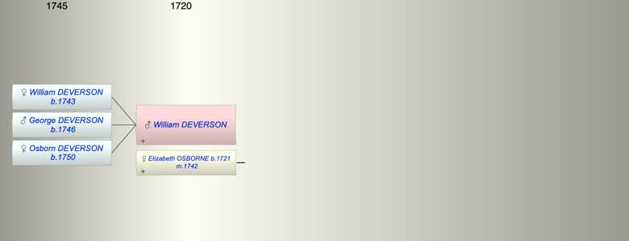

| [Index] |
| William DEVERSON |
|  |
| m. 08 Jan 1742 Elizabeth OSBORNE (1721 - ) at St Andrew, Canterbury |
| Children (3): |
| William DEVERSON (1743 - ) |
| George DEVERSON (1746 - ) |
| Osborn DEVERSON (1750 - ) |
| Events in William DEVERSON's life | |||||
| Date | Age | Event | Place | Notes | Src |
| 08 Jan 1742 | Married Elizabeth OSBORNE (aged 21) | St Andrew, Canterbury | ex FS | ||
| 1743 | Birth of daughter William DEVERSON | St Laurence | Note 1 | ||
| 1746 | Birth of son George DEVERSON | St Laurence | Note 2 | ||
| 1750 | Birth of daughter Osborn DEVERSON | St Laurence | Note 3 | ||
| Note 1: bap 18 Dec 1743 at St Laurence ex FS |
| Note 2: bap 28 Sep 1746 at St Laurence ex FS |
| Note 3: bap 16 Dec 1746 at St Laurence ex FS |
| Created on a Mac™ using iFamily for Mac™ on 8 Oct 2023 |